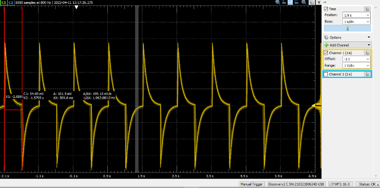
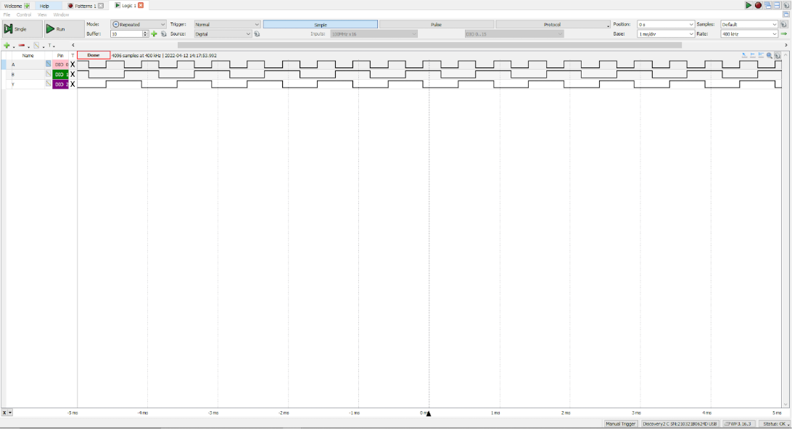

Logic Gates
Created using transistors and tested with an Oscilloscope
XOR Design 1:
Functional Testing and Timing:

XOR Design 2:
Functional Testing and Timing:

Results:
Based on the results, it's clear that the second circuit has a far lower switching time, but also has a smaller operation range, as VH is 3.46V and VL is 0.35V rather than 4V and 0V for the first design. Which shows that as many things in electronics follow, there is always a tradeoff between parameters.